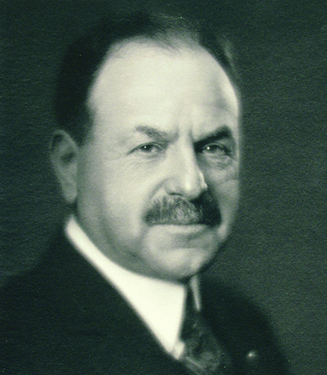
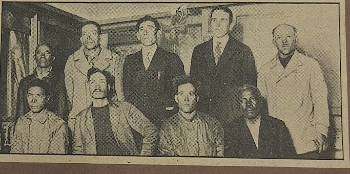

The Behrend Family Archives by Tessa Daley, Megan Litz, and Mallory Pentycofe.
This was a collaboration project for our final in our Digit 110 class.
The goal of this project was to document articles on the Amida which was owned by Ernest R. Behrend, rescuing crew members from the James E. Coburn which owned by J. Sonceca, of New Bedford.
This project contains the following:
News Clippings
Gallery
Information on The Amida
Telegrams

